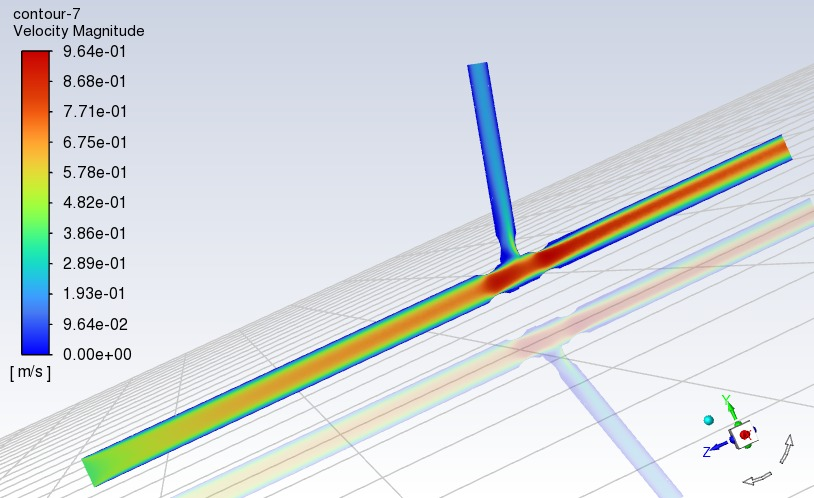
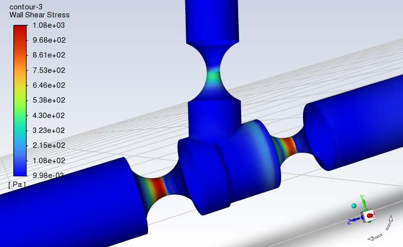
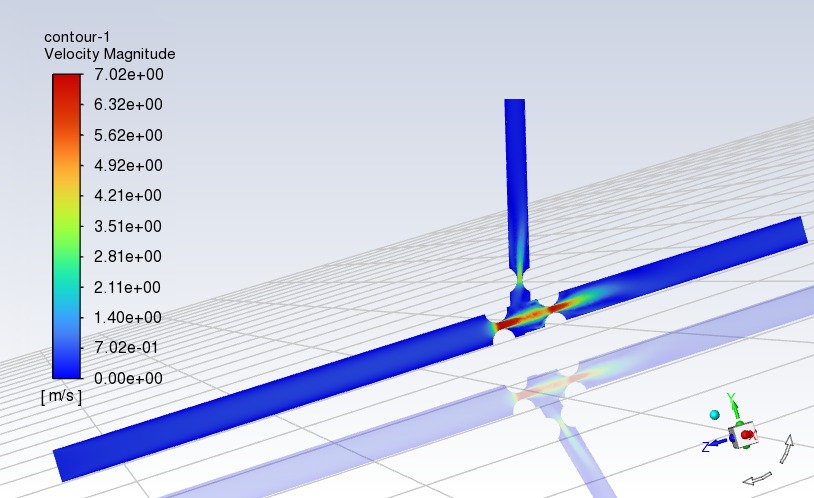
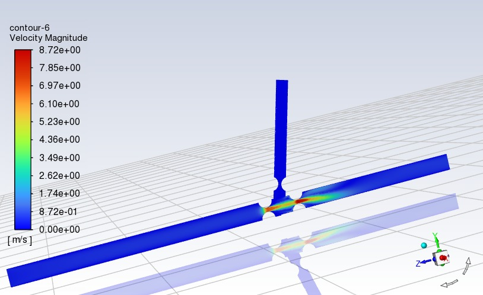
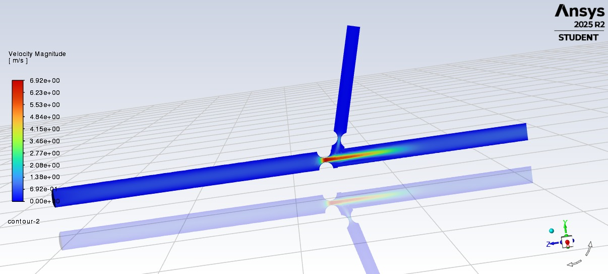
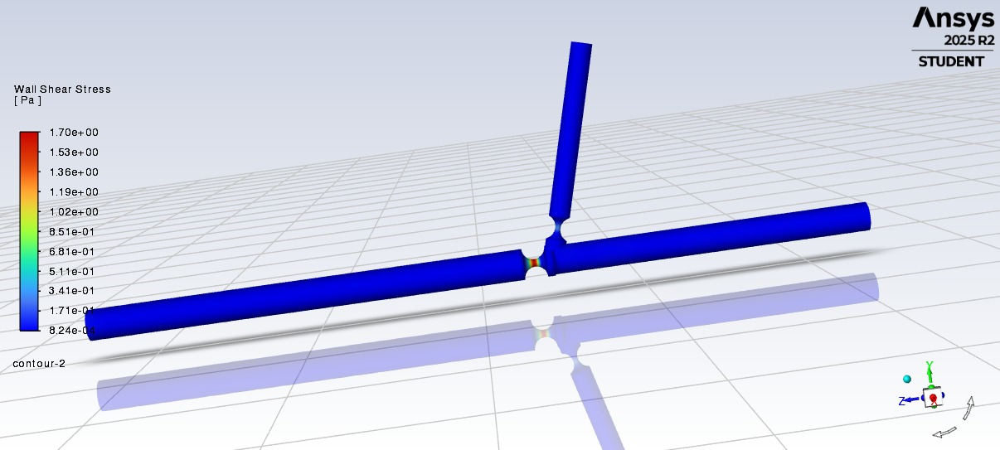

Carotid Artery Computational Fluid Dynamics
Interactive Final Presentation Workspace — Results Review & Simulation Media Archive
Project Summary & Discussion Guide
This workspace organizes the computational fluid dynamics (CFD) studies conducted on the carotid artery geometry. Use the sidebar navigation to toggle between steady-state profiles, custom user-defined function (UDF) transient pulsatile runs across varying fluid rheologies, and downstream stent geometric interventions. All raw reports and compiled data sheets are directly accessible at the bottom section.
Steady-state verification steps structured by rheological classifications.






Transient fluid animations mapping standardized Newtonian blood approximations across the pulsatile wave cycle.
Advanced mathematical viscosity model comparisons under dynamic boundary profiles.
Evaluating post-intervention flow disturbances, structural wall shear adaptations, and recirculation regions.
Review your finalized report documents and mesh convergence criteria charts interactively inside the viewer spaces below.